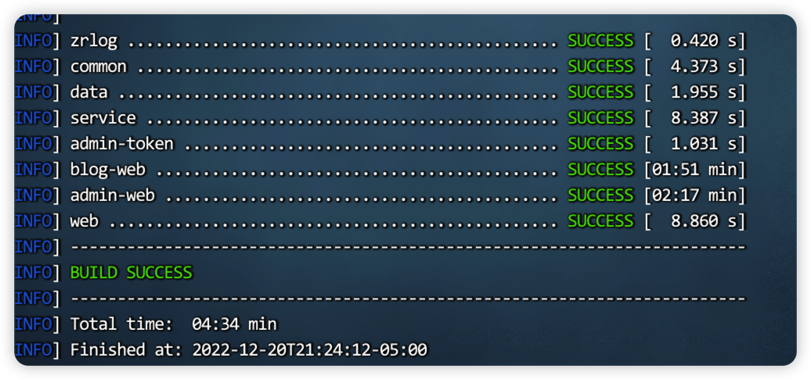
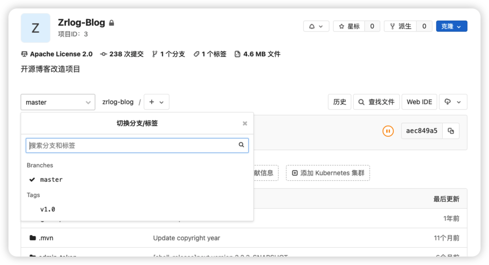
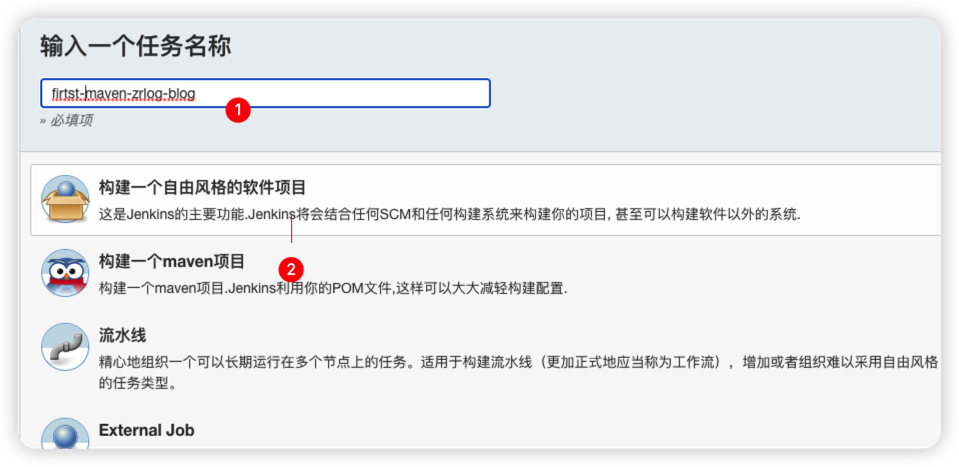
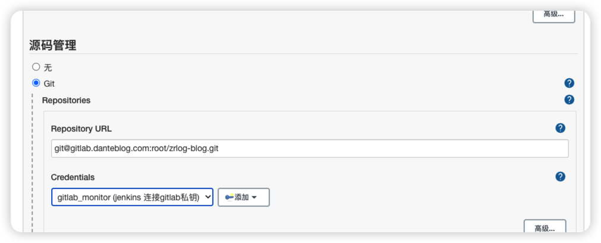
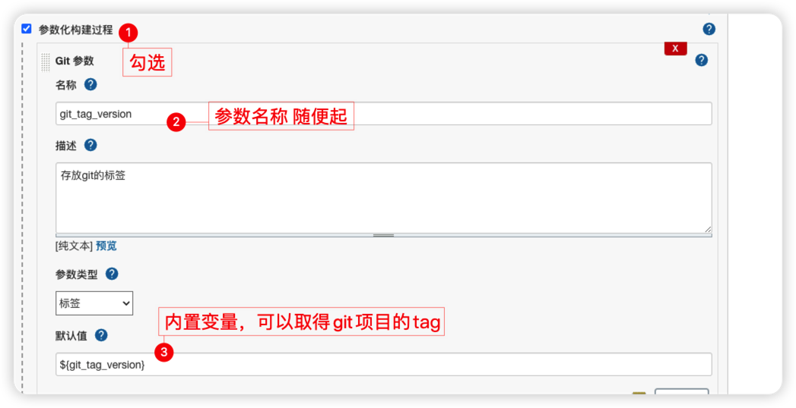
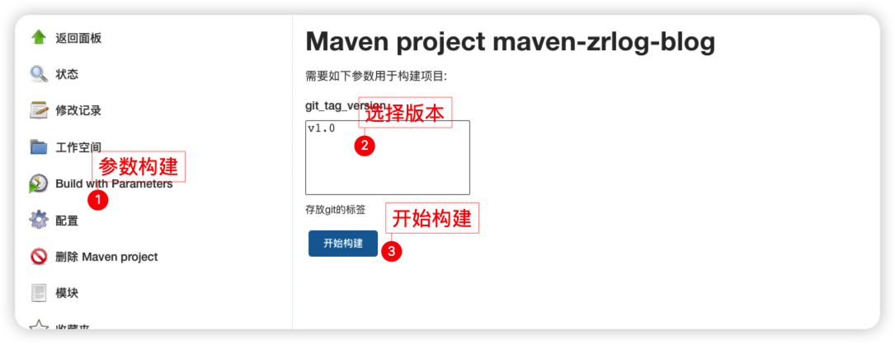
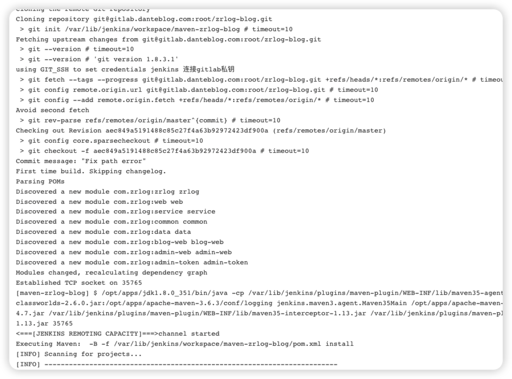

概述
我们以java开源项目zrlog为例，进行一次完整的部署，实现一套完整的CICD流程。
整个过程如下：
开发提交代码至gitlab
jenkins拉取获取代码
代码的质量检测;
代码的编译;
发布。
环境准备
源码准备
1 | [root@localhost code]# git clone https://gitee.com/94fzb/zrlog.git |
JDK 准备
1 | [root@localhost bin]# java -version |
maven准备
1 | [root@localhost opt]# wget -P /apps/tools/ https://archive.apache.org/dist/maven/maven3/3.6.3/binaries/apache-maven-3.6.3-bin.tar.gz |
编译源码

数据库准备
1 |
|
推送Gitlab

如图，我们给源码打一个tag 部署时候，就按照标签进行构建。
Jenkins构建
整合gitlab


这个地方,我们调整参数化构建，拉取指定的tag版本。

接下来，就可以进行构建了。

查看日志

现在 构建过程主要是，拉取git代码，进行maven编译

...
...
00:00
00:00
This is copyright.